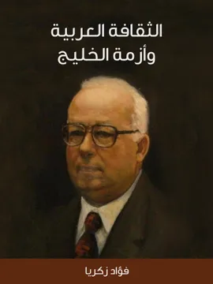

الثقافة العربية وأزمة الخليج

قراءة عربية أصلية محددة النطاق في الصفحات 7، 8 من ملف PDF المرتبط، وليست تلخيصا كاملا للكتاب. نناقش ما تدعمه هذه المقاطع فقط.
أزمة الخليج بوصفها أزمة فضح
يفتح زكريا تقديمه بجملة حاسمة: أزمة الخليج فضحت الكثير مما كان خافيًا وكشفت حقائق أليمة، منها أن حلم الوحدة العربية ينتمي إلى عالم الأمنيات أكثر منه إلى الواقع، وأن بين الشعوب العربية حواجز بل حزازات لا تقل عما بين أنظمة الحكم من منافسات وعداوات. ويرى أن العقبات دون الديموقراطية في عالمنا العربي ترجع إلى عدم تأصيل الفكرة وإلى عدم الاكتراث الذي يبديه الكثيرون إزاء مبدأ الحرية ذاته، بقدر ما ترجع إلى معوقات السلطة. ويسجل أن آراءه نُشرت مقالات في صحف أجنبية عام 1991.
زاوية وحدود القراءة
قراءة في تقديم المؤلف فؤاد زكريا من الصفحتين 7 و8، لا في فصول الكتاب كاملة. الأحكام عن الوحدة والديموقراطية آراء المؤلف في تقديمه بعد أزمة 1991، والإشارات الصحفية (ليبيراسيون، الأهرام ويكلي) منقولة من هوامشه كما وردت. لا نعمم من التقديم على تحليلات الكتاب التفصيلية.
الطبعة والقراءة
هذه النسخة من الكتاب صادرة ومتاحة مجانًا بموجب اتفاق قانوني بين مؤسسة هنداوي وأسرة السيد الدكتور فؤاد زكريا.
تنزيل PDF المجاني ↓ القراءة والمصدر الرسمي ↗